Education has undergone significant changes due to the COVID-19 pandemic.
This website explores the differences in educational methods before and after the pandemic, examining both
challenges and new opportunities.
In the pre-COVID era, traditional teaching methods dominated, relying heavily on in-person interactions and
structured environments. However, the pandemic has catalyzed a transformation in education, prompting
institutions to innovate and adapt rapidly.
This comparison not only highlights the stark contrasts between the two periods but also emphasizes the
lessons learned that could shape the future of education.
Pre-COVID Education
Before the pandemic, education was primarily based on traditional classroom teaching. Schools, colleges, and
universities conducted in-person classes, allowing students to interact face-to-face with teachers and
peers.
Key Features:
In-person classroom learning
Direct interaction with teachers
Fixed class schedules
Limited use of technology
Life before COVID also included:
Social gatherings and events, fostering community engagement
Limited online resources for learning
Consistent school attendance policies
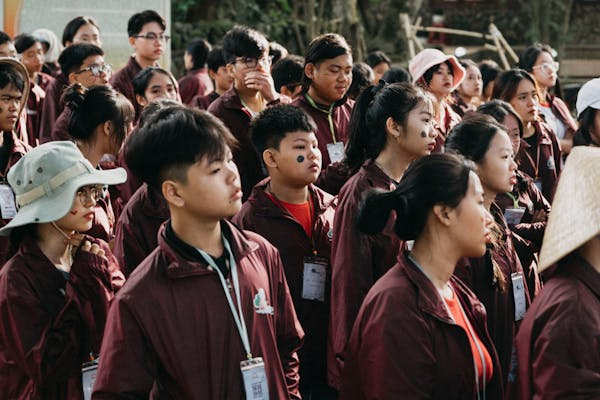
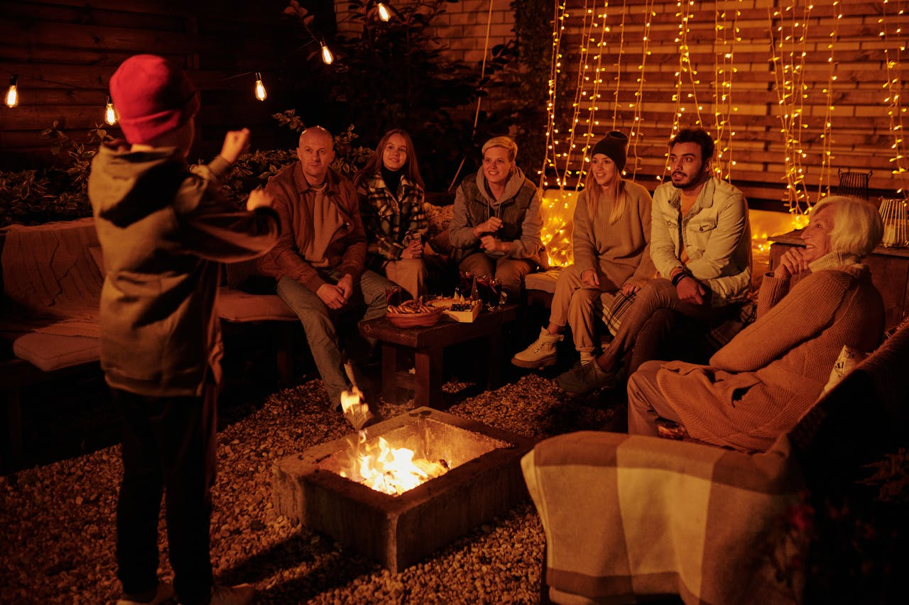
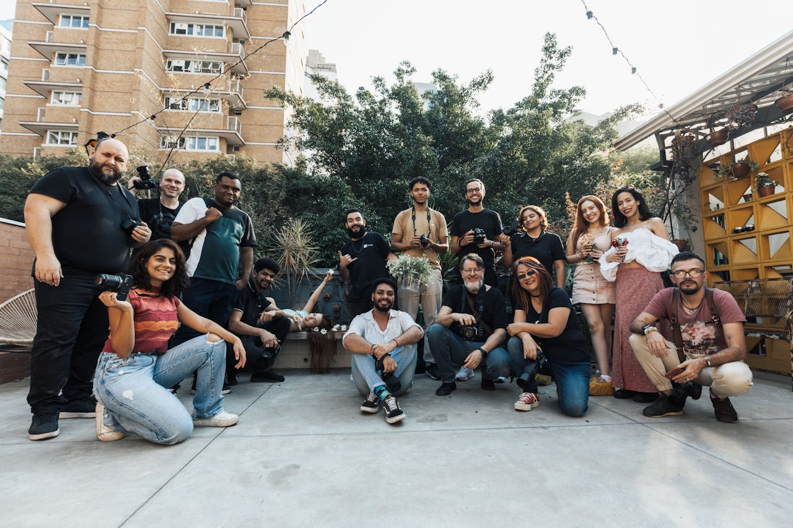
Post-COVID Education
The pandemic forced a rapid shift to online learning. Educational institutions adapted to virtual classrooms
using various online platforms, changing how students and teachers interacted.
Key Features:
Online and hybrid learning models
Use of digital platforms (Zoom, Google Classroom, etc.)
Flexible schedules
Increased use of technology
Life after COVID includes:
More reliance on digital communication tools
Increased focus on mental health and well-being
Adoption of blended learning approaches
Greater emphasis on self-directed learning
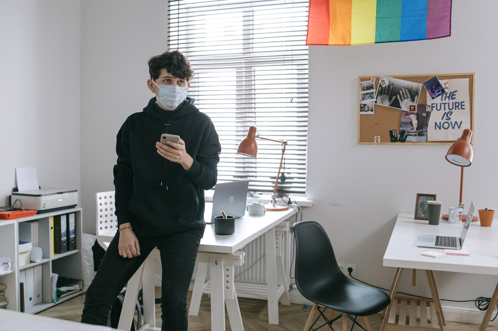
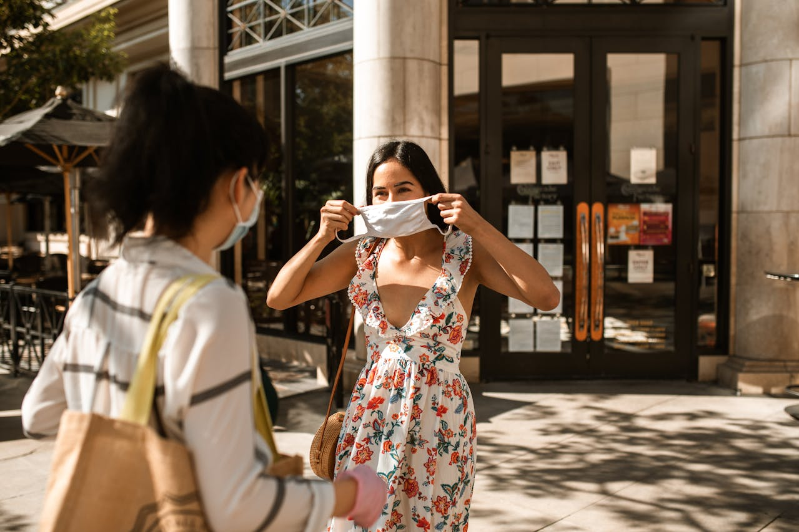
Challenges
Both pre-COVID and post-COVID educational models have their own sets of challenges.
Pre-COVID Challenges
Post-COVID Challenges
Limited access to remote learning tools
Digital divide and lack of access to technology
Fixed schedules making it difficult for working students
Lack of face-to-face interaction
N/A
Online fatigue and mental health issues
Future Trends
In the future, education is expected to combine the best of both traditional and digital models. Hybrid
learning, personalized education, and increased use of technology will play a key role.
Key Trends:
Blended learning environments that incorporate both in-person and online components.
Use of Artificial Intelligence in education to tailor learning experiences and improve
administrative efficiency.
Greater focus on mental health and well-being, with schools prioritizing support systems for students.
Increased collaboration between educational institutions and technology companies to create innovative
learning solutions.
Global learning opportunities that leverage digital platforms to connect students and educators across
borders.
These trends suggest a future where education is more accessible, inclusive, and adaptable to the needs of a
diverse student population.
 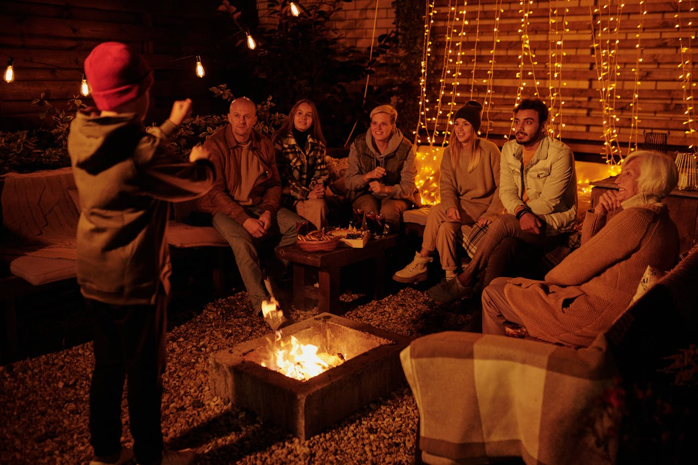
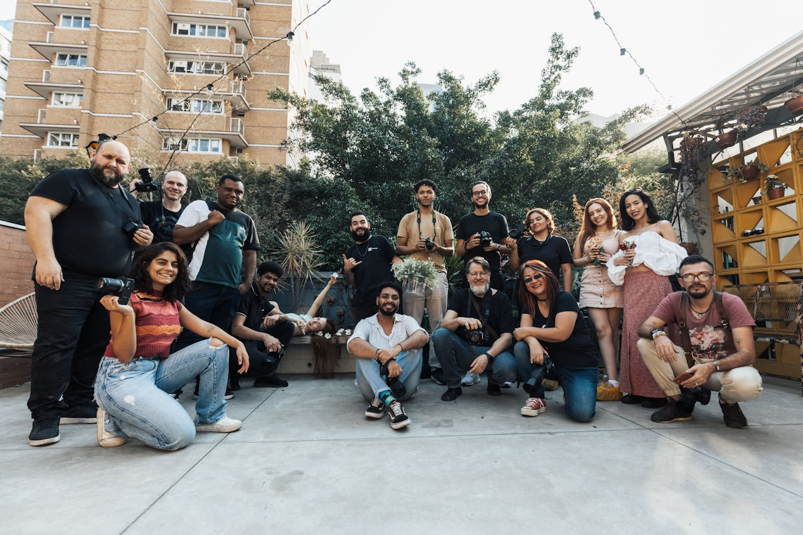
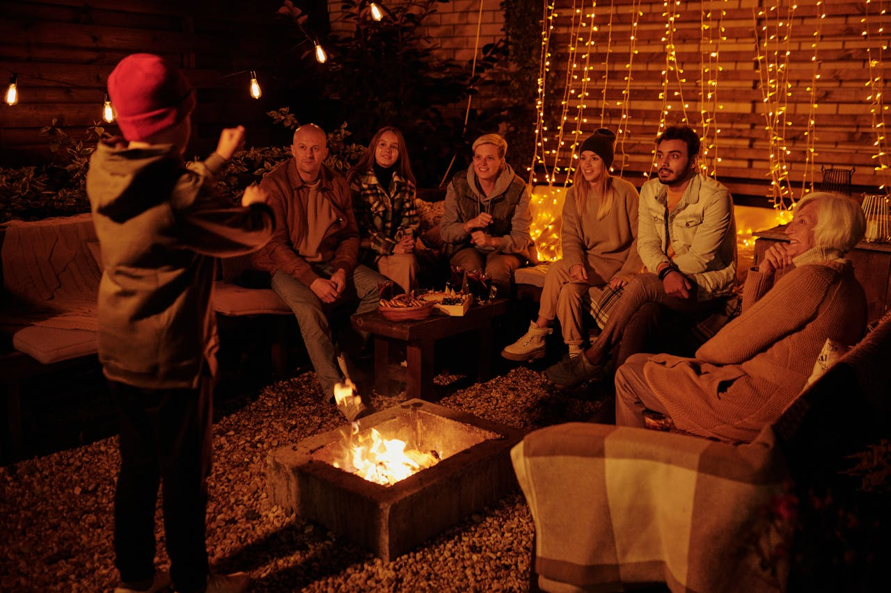
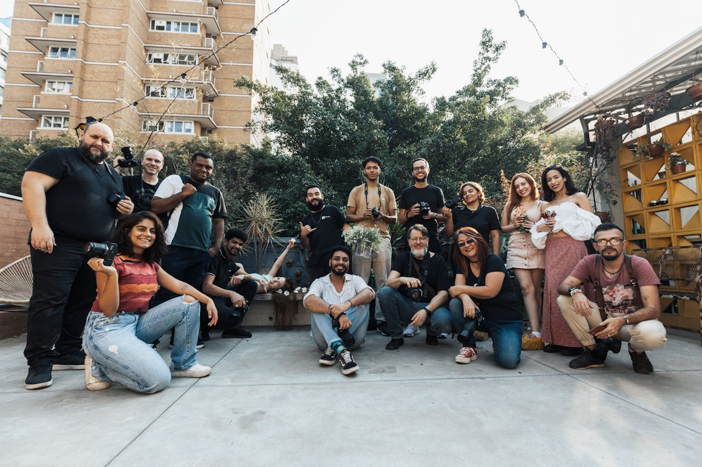
 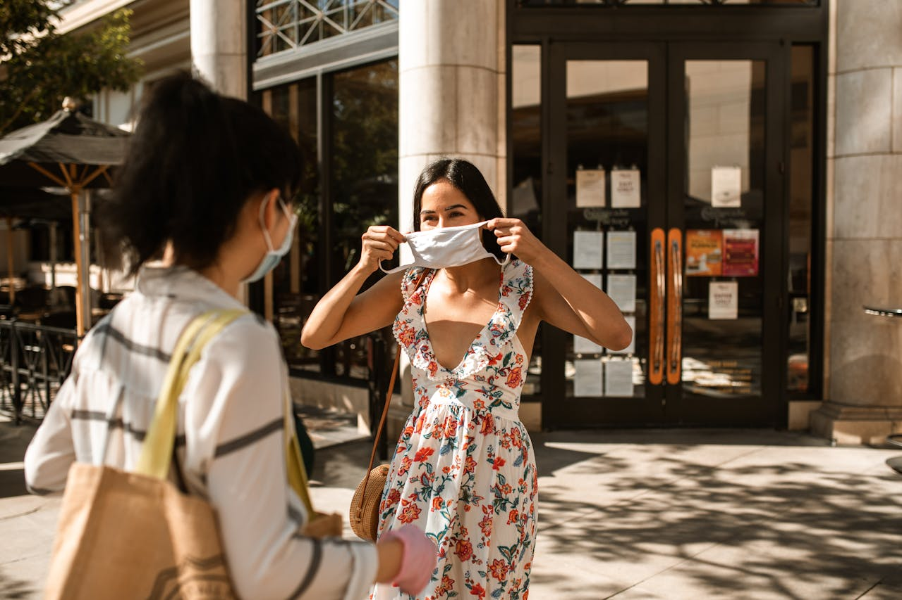
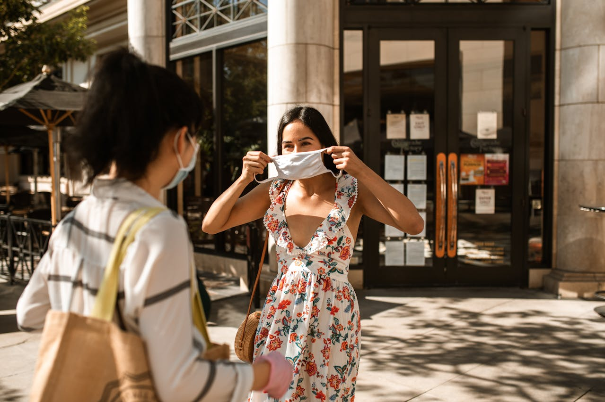